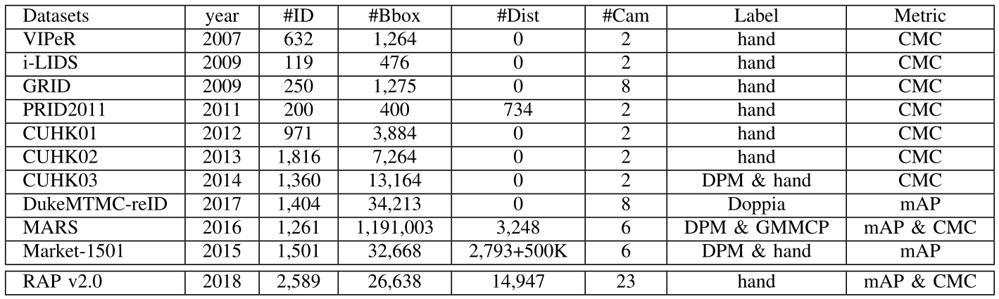

Dangwei Li, Zhang Zhang, Xiaotang Chen, Kaiqi Huang
| Class | Attribute | |
|---|---|---|
| Spatial-Temporal | Time, sceneID, image position, bounding box of body/head-shoulder/upper-body/lower-body/accessories. | |
| Whole | Gender, age, body shape, role. | |
| Accessories | Backpack, single shoulder bag, handbag, plastic bag, paper bag etc. | |
| Posture,Actions | Viewpoints, telephoning, gathering, talking, pushing, carrying etc. | |
| Occlusions | Occluded parts, occlusion types. | |
| Parts | head | Hair style, hair color, hat, glasses. |
| upper | Clothes style, clothes color. | |
| Lower | Clothes style, clothes color, footware style, footware color. | |
Figure 1: Samples with action attribute annotations.
Figure 2: Samples with body part annotations.
Table 2: Comparison with existing pedestrian attribute datasets.
Figure 3: Samples with cross-day person identity annotations.
Table 3: Comparison with existing person ReID datasets.
